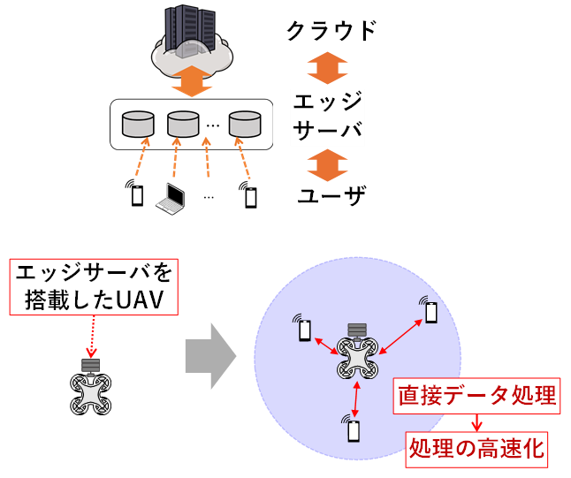
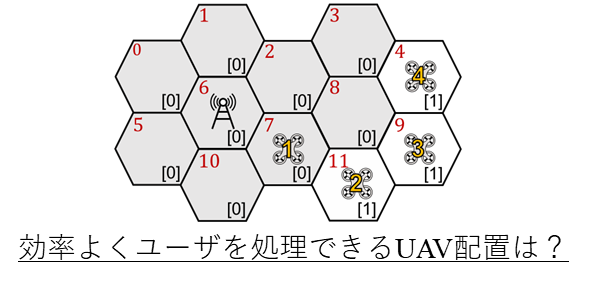
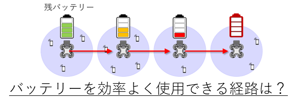
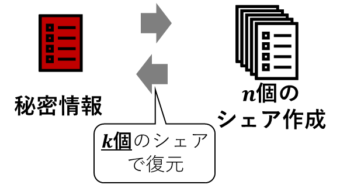
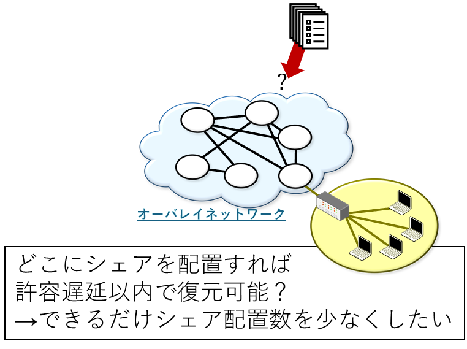
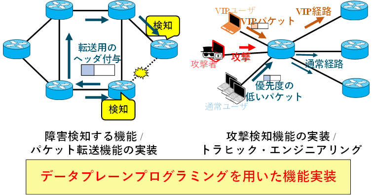
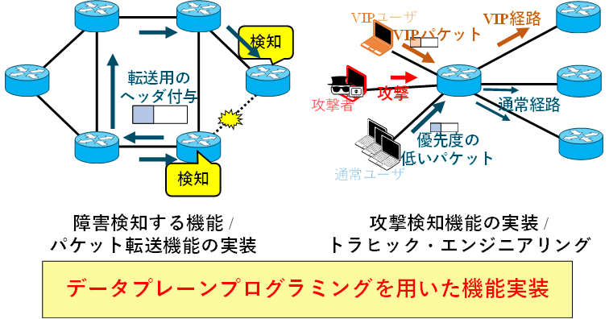

セキュリティとマルウェア対策

スマートフォンやIoT機器の普及により便利な世の中になっていますが，同時に「マルウェア」と呼ばれる悪意あるソフトの脅威も増えています． 本研究では，マルウェアが通信ネットワークや無線通信環境下でどのように広がるかを数理モデルで分析し，感染拡大の仕組みや対策方法を考えます．
エッジコンピューティングとUAV
  近年では，よりリアルタイム性が求められるアプリケーションの登場により，ユーザ端末の近くでデータ処理を行うエッジコンピューティング （Edge Computing: EC） の重要性が高まっています． 本研究では，EC環境において，複数の仮想マシン （VM） をエッジサーバ上に柔軟に割り当て，リソースの有効活用やトラフィック分散に加え，障害発生後もサービスを継続できるようなVM再配置・冗長ルート設計手法の構築に取り組んでいます． また，エッジサーバを搭載したUAVによる分散データ処理や，バッテリー管理・効率的な運用手法の研究を進めています．
セキュアな情報共有と分散システム
 データの暗号化には暗号鍵が必要となりますが，漏洩等による危険性があります．本研究では，機密データの紛失や盗難を防止するための秘密分散スキームについて研究しています． 秘密分散技術や分散ネットワークを活用した安全な情報共有・復元技術の開発を行っています．
プログラマブルネットワーク
 
P4を用いることで，障害検知機能を実装できます．また，攻撃者の異常な通信を早期に検知して制限する機能を追加したり，特定のユーザの通信を優先的に通すといった機能を追加できます．

P4を用いることで，障害検知機能を実装できます．また，攻撃者の異常な通信を早期に検知して制限する機能を追加したり，特定のユーザの通信を優先的に通すといった機能を追加できます．